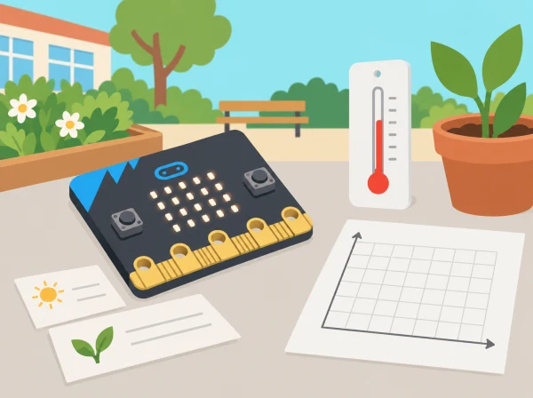

Dades que parlen del pati
🏷️ Observació i dades responsables
🌱 Situació, repte i intenció
🎯 Aprenentatges i vocabulari
- Distingir una observació, una dada i una interpretació, i registrar font i condicions de mesura.
- Comparar lectures repetides i descriure variabilitat, casos dubtosos i límits del sensor.
- Dissenyar un prototip amb una regla explícita que transforma una entrada en una resposta.
- Comunicar una proposta útil sense recollir dades personals ni presentar una lectura com a mesura professional.
🧰 Materials i preparació
BBC micro:bit, MakeCode, ordinador, targetes, llapis i full de registre. Els sensors de llum, brúixola, acceleròmetre i temperatura varien segons la versió i l’entorn; confirmeu els blocs i les limitacions de la placa disponible. No cal connexió a internet ni compte d’usuari.
📅 Seqüència didàctica
Què és una dada? (What is data?)
Fase 1 · Activem i prediem
Presenteu la petició del consell escolar i mostreu tres exemples breus: una lectura de llum, el recompte agregat de targetes i l’opinió «m’agrada aquesta zona». Abans de classificar-los, l’alumnat prediu quins es poden comprovar i quins necessiten una explicació personal.
Fase 2 · Explorem i construïm
Classifiqueu targetes fictícies d’observacions ambientals, registres i opinions. Afegiu exemples de dades personals, dades agregades i dades de l’entorn; useu persones inventades i no demaneu a l’alumnat que expose informació pròpia. Cada equip escriu el criteri que ha utilitzat.
Fase 3 · Expliquem i registrem
Compareu les classificacions i analitzeu un cas fictici d’ús inadequat de dades que podria perjudicar algú. Distingiu l’observació «la placa mostra 120», la interpretació «ací hi ha menys llum» i l’opinió «preferisc aquesta zona»; anoteu quina prova podria revisar cada afirmació.
Fase 4 · Apliquem i millorem
Reviseu què necessita saber el prototip per ajudar amb una pregunta ambiental i elimineu les dades supèrflues. Acordeu una norma de classe: no es recullen noms, imatges, veus, rutes individuals ni dades de salut; les proves se centren en l’entorn i es fan en llocs autoritzats.
Fase 5 · Comprovem i reflexionem
Caça de dades (Data treasure hunt)
Fase 1 · Activem i prediem
Trieu una pregunta ambiental que es puga respondre en dos o tres punts autoritzats del pati, com ara si les lectures de llum canvien entre ombra i sol. Predigueu què hauria de mantindre’s igual per a comparar els punts i quina variació podria alterar la lectura.
Fase 2 · Explorem i construïm
Feu una caça de dades amb un mapa senzill i codis de lloc genèrics. Amb micro:bit, programeu lectures en MakeCode o useu el simulador identificant-lo com a tal. Si mesureu temperatura, recordeu que la placa reflecteix aproximadament la temperatura del processador i pot diferir de la de l’aire; no és un termòmetre per a salut o seguretat.
Fase 3 · Expliquem i registrem
En cada punt compareu lectures repetides, mantenint orientació i altura semblants. Registreu hora aproximada, ubicació genèrica, unitat i condicions (ombra, núvol, llum pròxima); no anoteu qui hi era. Separeu la lectura observada de la inferència que en feu.
Fase 4 · Apliquem i millorem
Si les dades varien molt, repetiu la lectura i reviseu si s’ha mogut la placa o ha canviat la llum natural. Si no disposeu del sensor o del bloc necessari en la versió del kit, feu servir un conjunt fictici i marqueu-lo clarament com a simulat, no com una mesura real.
Fase 5 · Comprovem i reflexionem
Dissenyar un gadget (Sensor gadget design)
Fase 1 · Activem i prediem
Reviseu el patró de la caça de dades i trieu un públic i una necessitat de maqueta: per exemple, un indicador de llum per a un hort escolar en cartró. Predigueu què hauria de fer l’ajuda en una lectura baixa, intermèdia i alta.
Fase 2 · Explorem i construïm
En equips, dissenyeu el gadget amb una activitat desconnectada: una targeta de lectura entra, una regla s’aplica i una icona o missatge ix. Escriviu un algorisme amb repetició per a tornar a llegir el sensor i una selecció per a triar resposta.
Fase 3 · Expliquem i registrem
Dibuixeu el diagrama d’entrada–procés–eixida i trieu criteris verificables: resposta llegible, regla justificable, eixida neutral i cap dada personal. Indiqueu quin sensor integrat o accessori extern s’utilitzaria i quines limitacions té.
Fase 4 · Apliquem i millorem
Intercanvieu els esbossos amb un altre equip i demaneu-li que execute l’algorisme amb tres targetes de lectura. Reviseu una instrucció ambigua o una eixida sense camí de retorn. Si el sensor no forma part de la dotació, manteniu el prototip com a simulació, sense atribuir-li una lectura real.
Fase 5 · Comprovem i reflexionem
Dades, condicions i selecció (Data conditions & selection)
Fase 1 · Activem i prediem
Recupereu els criteris del gadget i trieu un llindar justificat per les lectures locals, no un valor universal. Predigueu què hauria de passar per davall, exactament al llindar i per damunt; decidiu quin missatge neutral apareixerà si la lectura és dubtosa.
Fase 2 · Explorem i construïm
Programeu una repetició de lectures i una condició que compare la dada amb el llindar, per exemple mostrar una icona si la llum és baixa. Representeu el codi amb pseudocodi o blocs i marqueu on entra la lectura, on es pren la decisió i quina eixida es mostra.
Fase 3 · Expliquem i registrem
Proveu tres valors —baix, igual al llindar i alt— i registreu lectura, condició activada i icona esperada. Compareu valors al voltant del llindar i expliqueu com canvia l’eixida quan canvia la dada.
Fase 4 · Apliquem i millorem
Proveu el comportament en un altre punt autoritzat i reviseu falses alertes. Si una ombra o l’orientació altera el resultat, ajusteu el muntatge o el llindar i torneu a passar els tres casos; no amagueu les proves anteriors.
Fase 5 · Comprovem i reflexionem
Un assistent digital (Digital assistants)
Fase 1 · Activem i prediem
Mireu exemples d’assistents digitals i pregunteu quines entrades reben i qui ha escrit les possibles respostes. Predigueu com es podria fer una ajuda local sense micròfon ni connexió: un menú de dues opcions per a l’hort o el joc de pati.
Fase 2 · Explorem i construïm
Construïu un assistent de menú que respon a A/B amb una proposta preprogramada: observar l’ombra, revisar una planta o triar una ruta de joc. Escriviu primer les targetes d’opció i assigneu una resposta concreta a cada botó.
Fase 3 · Expliquem i registrem
Dibuixeu el mapa d’estats: inici, opció A, opció B i retorn. Indiqueu quines dades usa el programa —botó premut i regla triada— i quines no usa —veu, ubicació individual, identitat o dades de salut—. Expliqueu que les respostes les ha escrit l’equip.
Fase 4 · Apliquem i millorem
Una altra parella prova cada botó sense rebre instruccions dels autors i registra si arriba a l’opció prevista. Depureu una eixida sense camí de retorn o un botó sense resposta, i repetiu la prova després del canvi.
Fase 5 · Comprovem i reflexionem
Del patró observat al prototip
Després de representar les lectures amb una taula o pictograma, cada equip selecciona una necessitat concreta del projecte escolar. Dibuixa una cadena d'entrada, procés i eixida: el sensor obté una lectura; una condició la compara amb un llindar; la placa mostra una icona o un missatge. El grup justifica el llindar amb les seues pròpies proves i anota què passaria just per damunt o per davall.
Proveu tres valors —baix, igual al llindar i alt— i confirmeu l'eixida esperada abans de provar el programa en un altre lloc.
Per al menú de l'assistent digital, feu un mapa d'estats senzill: inici, opció A, opció B i retorn. Un company prova cada botó sense rebre instruccions dels autors i registra si arriba a l'opció prevista. Aquest control d'estats ajuda a detectar una eixida sense camí de retorn o un botó sense resposta; no implique cap processament de veu ni intel·ligència artificial.
🧪 Evidències i avaluació
Recolliu una classificació de dades, pla de mostreig, taula amb unitats i condicions, diagrama d’entrada-procés-eixida, programa amb condició i proves al voltant del llindar. Valoreu si les conclusions respecten els límits del sensor i si el gadget resol una necessitat concreta sense recollir dades personals.
Fitxa de recerca i seqüència de treball
Per a cada lectura, l'equip completa: pregunta, lloc genèric, sensor o font, valor i unitat, condició observada, repetició i dubte. En la sessió 1, compareu una observació («la placa mostra 120») amb una interpretació («ací hi ha menys llum») i una opinió («preferisc aquesta zona»). Separeu-les en tres columnes i acordeu quina es pot comprovar amb una prova.
En la caça de dades, feu dos o tres punts de mesura comparables i repetiu cada lectura mantenint orientació i altura semblants. No cal cobrir tot el pati: un mostreig menut i ben explicat és més útil que una col·lecció de valors sense procediment. Anoteu si una ombra, un núvol o l'escalfament de la placa poden haver canviat el resultat.
Si el sensor no està disponible o els blocs varien entre versions, feu servir un conjunt fictici marcat com a simulat i no el presenteu com a mesura real.
Rúbrica i retorn entre equips
Reviseu cinc criteris amb «amb suport / en procés / de manera clara»: classifica dades i opinions; documenta condicions de mesura; representa el sistema amb entrada, procés i eixida; prova el llindar amb casos propers; i comunica una limitació concreta del sensor. Cada equip mostra el prototip a una altra parella, que intenta seguir les instruccions i proposa una pregunta, no una nota. La versió revisada inclou almenys un canvi justificat a partir d'aquest retorn.
♿ Participació, accessibilitat i seguretat
Mesureu espais amb autorització i no anoteu qui hi era. Repetiu lectures i registreu variacions d’orientació, ombres o escalfament de la placa. Les lectures són aproximades; un canvi o una correlació no demostra per si sol una causa ni permet generalitzar a tot el centre.
🔗 Referents i adaptació
Aquesta situació adapta les cinc lliçons de micro:bit Data handling: What is data?, Data treasure hunt, Sensor gadget design, Data conditions & selection i Digital assistants. Els punts de recollida, el gadget, les dades d’exemple i les preguntes són propis; es mantenen els objectius de dades, sensors, algoritmes, condicions, disseny i depuració.